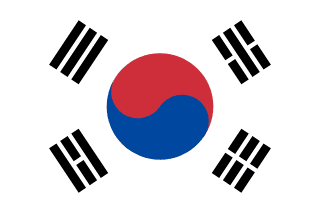
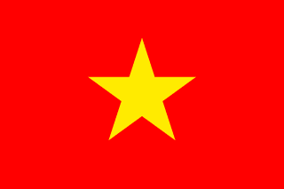
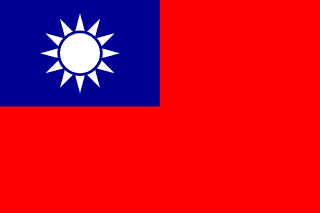
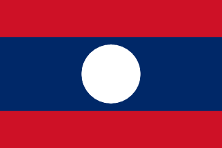
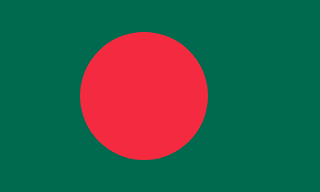

Kínai
Kínai
中文汉字简体
Jellemzők:
• Összetett karakterek• Négyzetes formák
• Csak kínai írás (nincs keverék)
Tipp: Ha csak kínai karaktereket látsz más írás nélkül
 Japán
Japán
漢字ひらがなカタカナ
Jellemzők:
• 3 írásrendszer keveréke• Kanji + Hiragana + Katakana
• Lekerekített és szögletes elemek
Tipp: Keverék írás = BIZTOSAN japán!
 Koreai
한국어 한글
Jellemzők:
• "Építőkocka" szerű karakterek• Körök és egyenes vonalak
• ㅏ, ㅓ, ㅗ, ㅜ alakú elemek
Tipp: Kerek-szögletes "kockák"
 Thai
Thai
ภาษาไทย
Jellemzők:
• Sok hurok és kanyar• "Buborékos" megjelenés
• Lekerekített formák dominálnak
Tipp: Görbe vonalak és hurkok
 Vietnami
Tiếng Việt
Jellemzők:
• Latin betűk + sok ékezet• ă, â, ê, ô, ư, đ karakterek
• Rengeteg ékezetes betű
Tipp: Latin + rengeteg ékezet = Vietnami
 Taiwani
繁體中文
Jellemzők:
• Hagyományos kínai karakterek• Bonyolultabb, részletesebb
• Nem egyszerűsített formák
Tipp: Összetett kínai karakterek
 Laoszi
ພາສາລາວ
Jellemzők:
• Thai-hoz hasonló• Kerekebb, "puhább" formák
• Kevesebb éles szög
Tipp: "Puhább" thai-szerű írás
 Indonéz
Indonéz
Bahasa Indonesia
Jellemzők:
• Latin betűk• "ng", "ny" kombinációk
• Sok "a" végződés
Tipp: yang, dengan, tidak szavak
 Bangladesh
বাংলা ভাষা
Jellemzők:
• Bengáli írás• Vízszintes vonalak a tetején
• "Tetőgerenda" karakterek
Tipp: Karakterek tetején átfutó vonalak
 Maláj
Maláj
Bahasa Malaysia
Jellemzők:
• Latin betűk (mint indonéz)• "ng" kombinációk
• "Malaysia", "untuk" szavak
Tipp: Indonézhez hasonló, de más szókincs
 Fülöp-szigetek
Fülöp-szigetek
English + Filipino
Jellemzők:
• Főleg angol nyelv• Tagalog/Cebuano nevek
• Latin betűk
Tipp: Angol szavak ázsiai kontextusban
 India
India
हिन्दी देवनागरी
Jellemzők:
• Devanágari (Hindi)• Vízszintes vonal a tetején
• Bengálihoz hasonló tetővonalak
Tipp: "Tetőgerendás" de nem bengáli
 Kambodzsa
Kambodzsa
ភាសាខ្មែរ
Jellemzők:
• Khmer írás• Thai-szerű de bonyolultabb
• "Díszített", összetett karakterek
Tipp: Thai + még több dísz és részlet
 Arab
Arab
العربية
Jellemzők:
• Jobbról balra írás• Összekötött betűk
• Pontok betűk alatt/fölött
Tipp: Jobbról balra + pontok